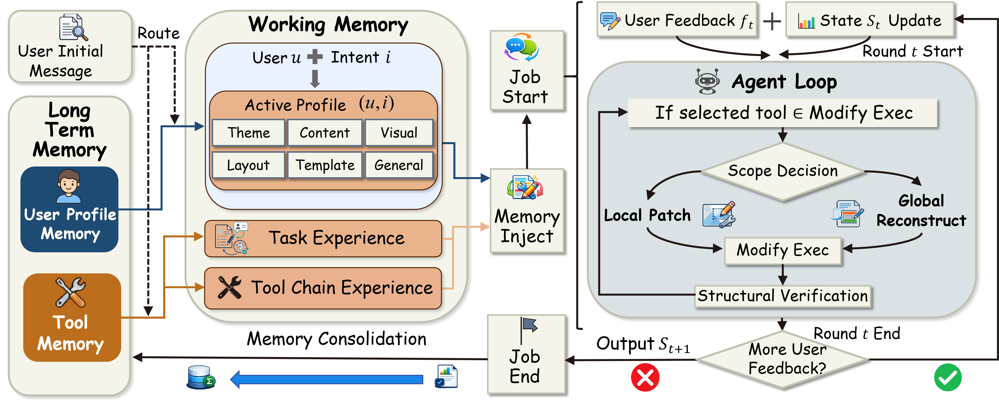
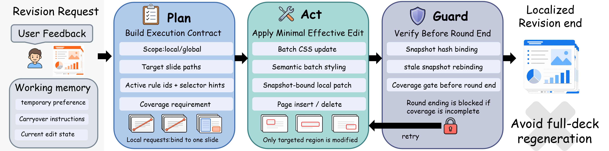
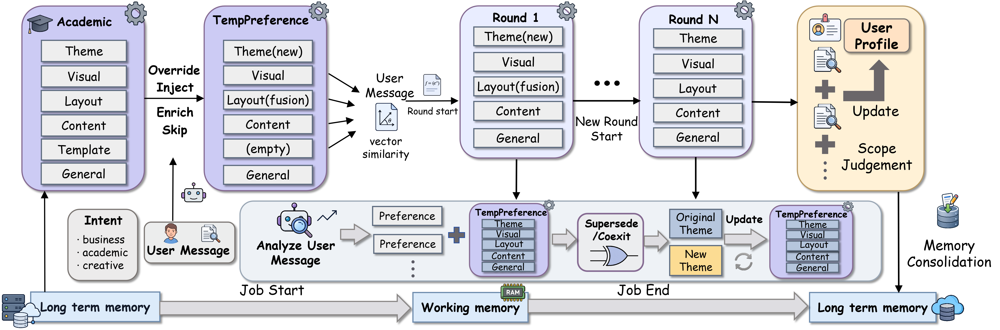
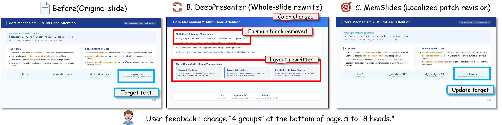
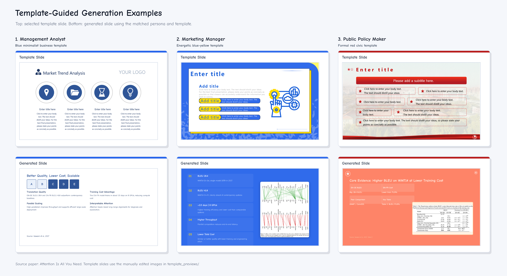

Profiles should shape the first draft.
User profile memory stores intent-conditioned preferences across theme, content, visual, layout, template, and general dimensions, then routes compatible items into the active job.
MemSlides separates user profile memory, working memory, and tool memory so personalized slide agents can preserve stable preferences, carry revision constraints across rounds, and execute local edits more reliably.
The study evaluates first-pass personalization, multi-turn revision behavior, and localized modify reliability through controlled comparisons and qualitative cases.
Personalized presentation generation requires more than conditioning on a current prompt or template. Agents must preserve stable user preferences across tasks, retain newly introduced constraints during multi-turn revision, and carry out local edits reliably. MemSlides addresses this with a hierarchical memory design that separates long-term memory from working memory, and further divides long-term memory into user profile memory and tool memory. User profile memory supports round-0 personalization, working memory keeps active preferences and session constraints available across revision rounds, and tool memory stores reusable execution experience for localized editing. Scoped slide-local revision then applies updates to the smallest affected region rather than repeatedly regenerating the full deck.
Personalized decks mix long-lived stylistic preferences, session-local revision constraints, and tool-level editing experience. Treating all of them as one flat prompt makes first-pass generation weaker and localized revision less reliable.
User profile memory stores intent-conditioned preferences across theme, content, visual, layout, template, and general dimensions, then routes compatible items into the active job.
Working memory keeps temporary deck-local preferences alive across later rounds, so a style or constraint introduced once can guide subsequent edits and inserted slides.
MemSlides resolves the target surface, applies scoped patches, and verifies coverage before finalize, reducing drift in content that was already aligned.
The paper separates memory first by lifetime. Long-term memory persists across jobs and contains user profile memory plus tool memory; working memory is the current-job state that generation and revision actually read.
Stores reusable signals that should survive beyond one deck authoring session.
Holds the active subset used by the agent now: routed profile items, temporary feedback preferences, edit state, carryover instructions, and repair focus for the current deck.

MemSlides converts feedback into an execution contract, chooses the smallest effective editing surface, and blocks premature completion when required coverage has not been verified.

Infer scope, target slides, active rules, selector hints, and whether coverage is required before editing.
Prefer batch CSS, semantic styling, or local patches over whole-deck regeneration; reserve full rewrite for new slides or controlled recovery.
Use inspection, coverage checks, snapshot hashes, and repair focus to stop the agent from declaring completion too early.
The evaluation covers first-pass personalization, ordinary deck quality, and diagnostic matched-pair modify behavior.
| Question | Signal | Selected result |
|---|---|---|
| Does profile memory help? | Persona-alignment judgments | All-column wins over both baselines on GLM-5 and Gemini 3.1 Pro; strongest averaged gains over SlideTailor are Content +2.73, Structure +2.95, Visual +2.79, Specificity +3.08. |
| Does quality remain competitive? | DeepPresenter-style quality metrics | GPT-5 Avg. 4.17 for MemSlides, best among compared systems in the shared three-profile suite. |
| Does tool memory improve editing? | Diagnostic modify pairs | 0.963 closed-loop completion and 0.534 strict verify with memory injection; first correct edit reduced from 609.5s to 242.5s overall. |
These cases show how the system consolidates reusable preferences, preserves session-local constraints, and updates only the slide regions that actually need change.
Profile extraction, consolidation, and working-memory carryover determine what the agent should remember across jobs and across rounds.

Intent-conditioned profile memory is selected, reconciled with the current request, used as active memory, and consolidated after the job.

Repeated local feedback cues become reusable organization patterns for later jobs.
These examples show how MemSlides preserves already aligned material while applying small targeted updates or template-constrained edits.

Targeted patches preserve already aligned content while satisfying the requested local change.

Task-time templates act as deck-local design constraints rather than generic profile preferences.
The MemSlides source tree separates generation, revision, runtime state, templates, tools, web sessions, and memory stores so the research concepts stay inspectable in engineering terms.
pipelines/
Coordinates Researcher, DeckDesigner, export, profile execution plans, and localized revision loops.
memory/
Stores user profiles, atomic preferences, episodes, tool chains, routing, extraction, and consolidation.
runtime/
Tracks deck execution state, page contracts, progress prompts, and local workflow context.
tools/
Implements write, inspect, patch, template, document, asset, memory, and verifier tools.